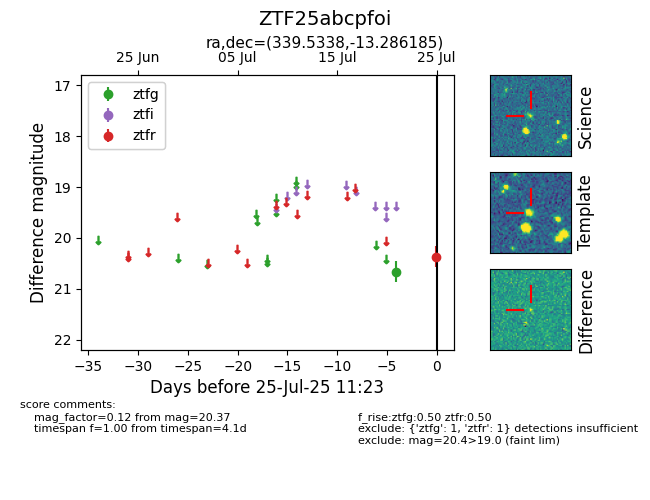

Target ZTF25abcpfoi at 2025-07-25 11:23, see:
FINK: fink-portal.org/ZTF25abcpfoi
Lasair: lasair-ztf.lsst.ac.uk/objects/ZTF25abcpfoi
ALeRCE: alerce.online/object/ZTF25abcpfoi
alt names
ZTF25abcpfoi (ztf,fink)
coordinates:
equatorial (ra, dec) = (339.5338,-13.28619)
galactic (l, b) = (50.2059,-55.94773)
photometry
last ztfg=20.66, ztfr=20.37
1 ztfg, 1 ztfr detections
